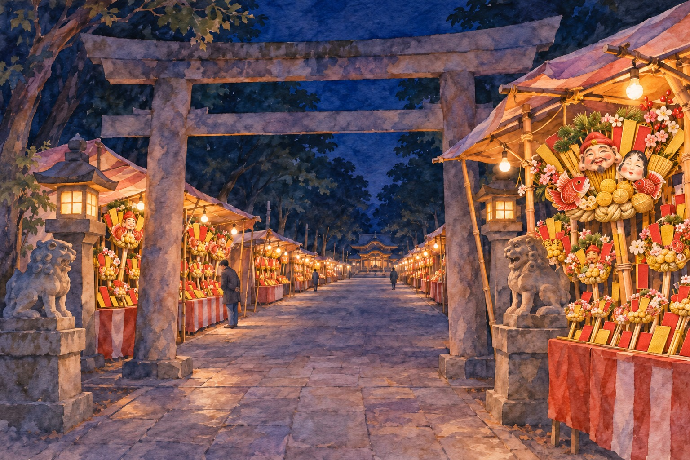
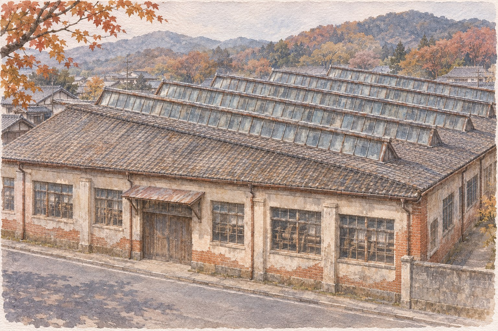

Kiryū, Gunma · 19–20 November 2026 · runs through the night
The God a Burned Silk Town Sent For
Kiryū's Ebisu fair runs for about 39 hours straight, all night in the middle. The shrine says it is there because, after a fire in 1898, the town's leaders wanted something to pull a town of incomers together, and paid to bring a god from near Osaka.
桐生西宮神社 えびす講 · Kiryū Nishinomiya Jinja Ebisu-kō1 h 44 min from AsakusaFacts checked November 2026
AI-generated illustration · An imagined scene, not a photograph or an exact depiction of the place or event.
If you were in Tokyo for a tori-no-ichi in November, you have already stood in a crowd buying a bamboo rake covered in gold, carp and masks for luck in business. Two hours north of Asakusa, on the 19th and 20th of every November, a silk-weaving town holds the other big lucky-charm fair of the Kantō autumn, and it does not close at night.
The god is different. It is Ebisu (恵比寿), the fisherman with the sea bream, patron of trade, whose home shrine is Nishinomiya Shrine (西宮神社) in Hyōgo, between Osaka and Kobe. Kiryū's shrine is its only direct branch in the Kantō, and has the right to call itself Kantō issha (関東一社), "the one in the Kantō". You give up a short night's sleep and a two-hour train ride. You get a Kansai festival dropped into a Kantō weaving town, and a reason for that which most visitors never hear.
Thirty-nine hours of stalls恵比寿講 · Ebisu-kō
The city's 2026 notice gives the hours as 7:00 on Thursday 19 November, through the night, until 22:00 on Friday 20 November. The 19th is the eve (宵祭り, yoimatsuri) and the 20th the main day (本祭り, honmatsuri). Entry is free.
What fills the hours is buying. Stalls along the approach and the surrounding streets sell rakes (熊手, kumade) and otakara (お宝), bundles of miniature treasures for a shop counter or a home altar. The shrine's own figure is "seven hundred stalls"; tourist sites say "several hundred". The shrine and the tourist sites both put visitors at over 200,000 a year.
The shrine sells its own charms and lists the town's Ebisu sweets: an Ebisu dorayaki, an otakara rice cake, and a candy with a sea-bream pattern. On the 20th at 6:00 there is a fuku-otoko (福男) run to the main hall, the same idea as Nishinomiya's famous January dash; the first three are the year's lucky men. Runners are chosen by lottery, so you will be watching, not running.
The fair never shuts. The quietest time to walk it is the small hours; the road closures tell you where the crowds will be by day.
When: 19 Nov 2026 (Thu) 7:00 → 20 Nov (Fri) 22:00, continuous. Same dates every year.
Reality check: Programme times for the dances, drums and puppet shows were not announced in readable form when this was checked. The shrine posts them as images on its site; look there in the week before.

AI-generated illustration — not an on-site photograph. An imagined scene inspired by this section, not an accurate depiction of the real place, objects or event.
Why Ebisu came to Kiryū関東一社 · Kantō issha
The shrine tells its own founding story on its website, and it is not a legend. In 1898 a fire in Honchō 3-chōme, the main street, burned 63 houses. Kiryū was a weaving town that had grown on craftsmen who came in from elsewhere, and the shrine's history says the town's leading men, the danna-shū (旦那衆), decided that a shared god of good fortune was the way to make one town out of it.
They asked Nishinomiya for a division of Ebisu's spirit. The shrine gives the bill: 30 yen for the division itself, 50 for the permission, 479 in all; 279 for the ceremony to carry the god in, and 2,269 to build the hall. All of it, the shrine says, came from townspeople's donations. The god arrived in 1901. Ebisu was placed beside Daikoku, already worshipped at Miwa Jinja (美和神社), in whose grounds the new shrine stood, and the two are still paired there.
Where: The Ebisu hall and Miwa Jinja are side by side at the same address, 2-1-3 Miyamoto-chō.
When: The grounds are open outside the fair too; the stalls are only on 19–20 November.
Reality check: The founding story and the yen figures are the shrine's own account. Its history page also contains a typo in the fire's Western year, so read it with care.
Ebisu is young here. The town is over three centuries old; its Ebisu came three years after a fire on the main street.
A Kansai god in a Kantō loom town西の西陣、東の桐生 · Nishi no Nishijin, higashi no Kiryū
Ebisu was not the first thing Kiryū borrowed from the west. The city's own heritage documents say Kiryū took in the high-warp loom (高機, takabata) technique from Nishijin in Kyoto and became a producer of luxury silk, until people paired the two: "Nishijin in the west, Kiryū in the east".
The town itself was planned. The city's preservation plan describes how, from 1591, Tenmangū shrine (天満宮) was moved to the north end and a straight street about ten metres wide was run south from it, with long, narrow plots on both sides handed to settlers from nearby villages. In 1646 a market for selling cloth began at Tenmangū. That street is Honchō-dōri (本町通り), the one that burned in 1898 and the one that is closed to cars during the fair.
Two imports from the Kansai: the technique that made the town rich, and the god it sent for after the fire.
Walk the street that burned桐生新町 · Kiryū Shinmachi
The old grid around Honchō 1- and 2-chōme was made a national preservation district for groups of historic buildings on 9 July 2012. The city's description is of a whole weaving town in one piece: merchants' houses, earthen storehouses and factories with sawtooth roofs (のこぎり屋根, nokogiri yane), built from the late Edo period to the early Shōwa period.
Yūrinkan (有鄰館), a group of old storehouses at the south end of the closed stretch of Honchō, is the landmark to aim for; the city's road-closure notice runs "as far as Yūrinkan". A tea shop, Kissa Yūrin, sits in one of the old buildings about 330 metres from the shrine. Kiryū's mechanical puppet theatre (桐生からくり人形, Kiryū karakuri ningyō) also performs during the fair, on both days, according to the shrine's past programmes.
Getting there: The district starts about 300 m from the shrine. Tenmangū, at its north end, is about 730 m.
When: The street is free to walk at any time. During the fair, Honchō-dōri is car-free 10:00–22:00 on both days.
Reality check: Many of the sawtooth-roof buildings are private workshops or offices. Look from the street.
Signs worth recognising on the night, since much of the town's information is in Japanese only:
You'll see
Reading
Means here
西宮神社
Nishinomiya Jinja
The shrine you want
恵比寿講 / ゑびす講
Ebisu-kō
The fair itself
歩行者天国
hokōsha tengoku
Street closed to cars
臨時駐車場
rinji chūshajō
Temporary car park
福男
fuku-otoko
The 6:00 run on the 20th

AI-generated illustration — not an on-site photograph. An imagined scene inspired by this section, not an accurate depiction of the real place, objects or event.
"Socks and kotatsu from Ebisu-kō"足袋と炬燵は恵比寿講から
Kiryū has a saying, reported by the shrine and by Japanese travel writers in slightly different wording: tabi to kotatsu wa Ebisu-kō kara. Split-toe socks and the heated table come out from the day of the fair. In other words, this is the night the town counts as the start of winter. Dress for it: you will be standing outside in the northern Kantō in late November, and if you stay into the small hours, the cold is the main thing you will remember.
If you want an otakara for someone's shop and cannot tell the sizes apart, point and ask the stallholder which one sells most:
どれが一番人気ですか (dore ga ichiban ninki desu ka). Ask before you choose; the seller will usually hold one up.
Rake stalls at Tokyo's tori-no-ichi are known for clapping a deal shut with a chant. Whether Kiryū's stallholders do the same is not something the sources checked here describe, so do not expect it.
Getting there浅草 → 新桐生 · Asakusa → Shin-Kiryū
The simplest route from Tokyo is the Tōbu limited express Ryōmō (特急りょうもう) from Asakusa Station (浅草駅) to Shin-Kiryū Station (新桐生駅). A route search in 2026 gave 1 hour 44 minutes and ¥2,480 one way (¥1,230 fare plus ¥1,250 reserved-seat express ticket). Shin-Kiryū is south of the Watarase River and not walking distance from the shrine. The city's Orihime bus (おりひめバス) to JR Kiryū Station (桐生駅) takes about 20 minutes; from JR Kiryū it is a 12–15 minute walk north. Jōmō Electric Railway's Nishi-Kiryū Station (西桐生駅) is about 10 minutes from the shrine on foot.
Getting there: Asakusa → Shin-Kiryū, Tōbu Ryōmō, 1 h 44 min, ¥2,480 → Orihime bus to JR Kiryū, ~20 min → walk 12–15 min.
When: Ryōmō trains are all reserved seats. Check the timetable for the last train back on the night you go.
Reality check: Fares and bus times above are from 2026 route searches and a city document, not an official timetable. Check them before you travel. Parking is in temporary car parks and the roads around the shrine are closed; do not drive.
The honest part
This is a fair, not a ceremony you can watch from start to finish. Most of what happens is people buying charms and food from stalls, in a crush on the busy hours. If you dislike crowds, the daytime on Friday the 20th is the time to avoid.
The most interesting part, the overnight stretch, is also the part you are least likely to see: the last trains back to Tokyo leave long before the small hours. If you want the night, look for a room in Kiryū or a nearby town early, since 200,000 people come over two days, or accept that you are coming for the evening only.
The programme of dances, drums and puppet shows was published by the shrine as images that could not be read for this article, and the descriptions found are from earlier years. Do not build your day around one performance without checking the shrine's own notice.
And the founding story is the shrine's own account. It is specific, with numbers, but it is one source.
If you only have one day
Friday 20 November 2026, from Tokyo, back the same night. Pick the Ryōmō closest to the times below.
Ryōmō from Asakusa. Buy the reserved ticket the day before.
Shin-Kiryū. Orihime bus to JR Kiryū Station.
Walk north to Honchō-dōri, now car-free. Lunch near Yūrinkan.
Walk the preservation district north to Tenmangū, where the cloth market began in 1646.
Back south and up to Nishinomiya Jinja. Pay your respects, then the stalls.
Dark by now. The lanterns and stall lights are the reason to have stayed.
Walk or bus back towards Shin-Kiryū for a Ryōmō to Asakusa.
Running late? Skip Tenmangū and go straight from Honchō to the shrine. Want the 6:00 run instead? Go on the 19th, sleep in Kiryū, and be at the shrine before dawn on the 20th.